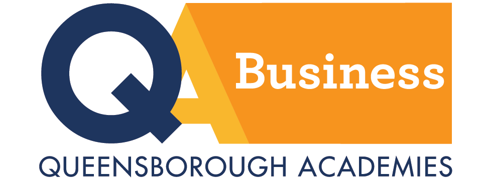

Associate in Science (A.S)
Forensic Account Duel Joint Program
Leading to the B.S. in Fraud Examination and Financial Forensics (John Jay College of Criminal Justice)
If youre interested in principles of accounting, finance, law, investigation techniques, ethics, theories of criminology and the forensic accounting field, this program is for you! The program consists of courses which enable you to pursue further education and careers in forensic accounting, accounting, and auditing, as well as financial operations and management fields. After successfully completing the program youll have access to the upper division baccalaureate program in Fraud Examination and Financial Forensics at John Jay College of Criminal Justice.


Business Adminstration
If youre looking to become a future business professional, this program will give you a broad overview of the business field and the academic foundation for career success. When you graduate, youll be ready to transfer to a bachelors degree program to specialize in a subject specific area. These could include accounting, business, finance or marketing.
Associate in Applied Science (A.A.S.)
Accounting
Do you like working with numbers? Accounting involves recording, classifying, analyzing and summarizing financial data. As a graduate, you'll be prepared to enter the job market as junior accountant, accounting clerk, tax examiner or office manager. If you choose to pursue a bachelor’s degree, you'll be ready for other career paths including auditor, controller and certified public accountant.


Computer Information Systems
The management of information drives many aspects of the modern business world. Learn the principles of information systems, systems analysis, and computer programming, accompanied by hands-on projects and applications. After graduation, you will be ready to either enter for the job market or transfer to a bachelor's degree program for more academic and career opportunities.
Management
Gain the education and skills to enter diverse professional areas including: sales, advertising, product management, market research, retailing, international business, small business management, real estate or insurance.


Medical Assistant
The A.A.S. degree program in Medical Assistant builds upong the existing 30-credit Certificate in Medical Office Assistant. By completing the Associate Degree program, students will increase their general medical knowledge and administrative skills and will gain proficiency in additional clinical procedures that a typical medical office would employ.
Office Administration and Technology
The office environment has been revolutionized by rapidly expanding and changing technologies. Queensborough Associate in Applied Science (A. A. S.) curriculum in Office Administration and Technology (OAT) prepares students for entry-level positions and career advancement in office administration, office supervision, and office management. Office software skills, communication skills, and writing skills are an integral part of OAT coursework.

Certificate Programs

Computer Information Systems - Certificate Program
If youre currently employed in computer programming or a related business area and want to improve your skills, this program is for you! Youll take a basic core of 18 credits then choose a 12-credit option in Computer Programming or Microcomputer Applications Software.
Office Administration Assistant - Certificate Program
If youre seeking employment as an office administrative assistant, this one-year college program, which is offered in both the day and evening sessions, provides the essential combination of education and training to give you the edge in a highly competitive job market. To complete the certificate, students can follow one of the concentrations shown below OR select any 16 credits from the courses listed in either of the concentrations to design an Office Administration Assistant Certificate that meets their future career objectives.

Health Care Office Administration: Managing, Coding, and Billing - Certificate Program
If youre already employed in the field or youve just graduated from high school this program can offer you expanded educational opportunities to advance or start your career. The curriculum develops your communication, interpersonal and business management skills. It also provides a broad understanding of the ways in which society deals with health and disease and offers selected exercises in physiology and anatomy. In addition, youll receive instruction in medical office procedures, computer use, coding and billing. Cooperative education experiences will enhance your understanding of the material.
Medical Office Assistant - Certificate Program
The modern medical office requires individuals trained in medical facility procedures, as well as administrative, technical, and secretarial skills. The Medical Office Assistant Certificate program combines medical secretarial skills with study of basic biological principles, public health sciences, and medical office clinical procedures.